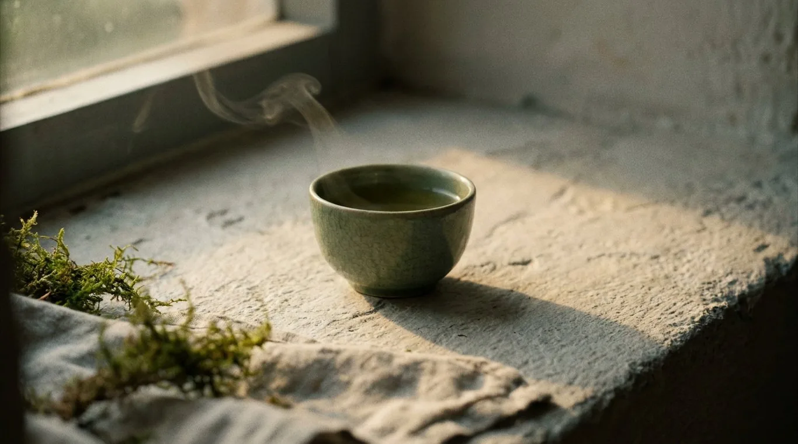
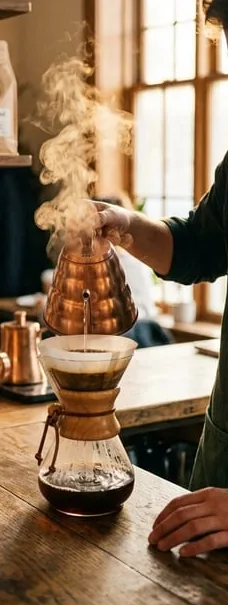

Café and tea bar, Florentin
Open every day from 7:00
Ochre

Slow coffee, loose-leaf tea and one long table by the window.
See the menuSunday to Thursday 7:00 to 19:00
Friday 7:00 to 15:00
The place
Roasted on Tuesday, poured all week.
We roast small batches in the back on Tuesdays and brew them by hand out front. The tea is loose-leaf and steeped to order.
Every filter coffee is weighed and poured over in front of you, so it takes four minutes. Sit down, we bring it over.
Beans from this week’s roast are sold by the bag at the counter, ground for your machine if you ask.

Come by, the table is long.
On the corner of Florentin and Vital. Laptops are welcome before noon on weekdays.
Florentin 12, Tel Aviv- Sunday to Thursday
- 7:00 to 19:00
- Friday
- 7:00 to 15:00
- Saturday
- 9:00 to 17:00